All Posts

New paper in Annals of AAG: thermal remote sensing of traffic impacts on urban heat during COVID-19
1 minute read
GeoFly Lab published a new paper in Annals of the American Association of Geographers that uses thermal remote sensing to assess how traffic activity influences urban heat island intensity during the COVID-19 lockdown period.
January 21, 2026

GeoFly Lab welcomes a new eBee X drone for our NSF seagrass mapping project
1 minute read
GeoFly Lab has added a new senseFly eBee X fixed-wing drone to support our NSF-funded seagrass mapping work.
January 15, 2026

New paper: crime prediction using Twitter data in San Jose
2 minutes read
2 minutes read
December 30, 2025

UCSC GIS Day 2025: Jointly hosted by GISTAR, CISR, GeoFly Lab, and the GIS & Drone Society
1 minute read
GISTAR, CISR, GeoFly Lab, and the GIS & Drone Society jointly hosted UCSC GIS Day 2025 at the Namaste Lounge, UC Santa Cruz. The event brought together a full room of students to learn, connect, and celebrate geospatial science.
November 21, 2025
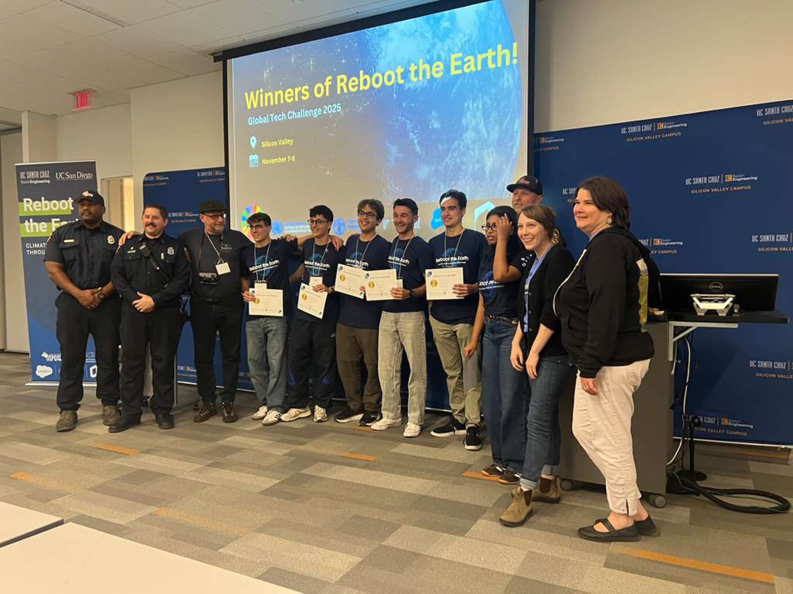
GeoFly Lab serves on judging panel for Reboot the Earth UN Innovation Competition
1 minute read
GeoFly Lab was honored to serve on the judging panel for the Reboot the Earth UN Innovation Competition hosted at the UCSC Silicon Valley Center. The event brought together student innovation teams from UC Santa Cruz, UC San Diego, and other UC campuses to propose actionable solutions for wildfire-related challenges.
November 08, 2025


New paper: highway expansion impacts on urban heat using Google Earth Engine
2 minutes read
2 minutes read
October 01, 2025
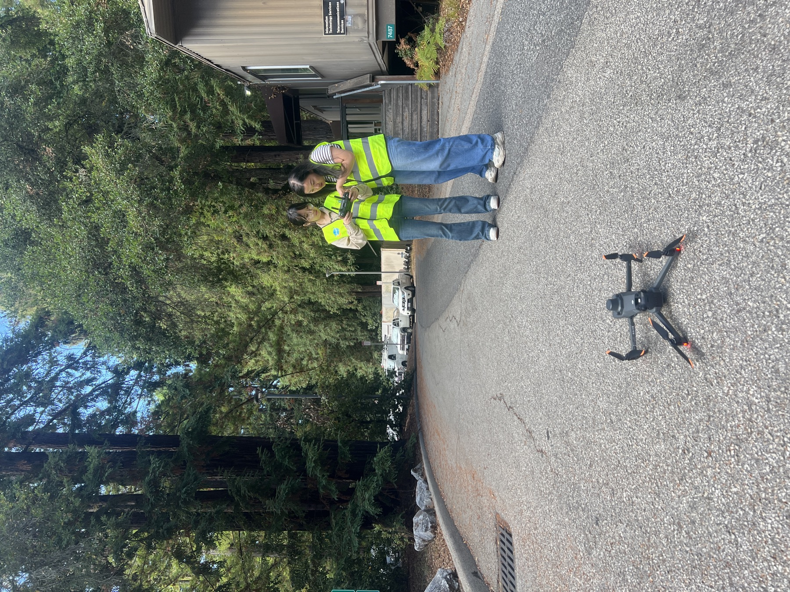
GeoFly Lab kicks off the academic year with basketball and drone flights
1 minute read
To mark the start of the new academic year, GeoFly Lab gathered for an informal activity session that combined two priorities of our lab culture: team building and hands-on field practice.
September 19, 2025

NSF Build and Broaden 2024 Summer Coastal Drone Fieldwork Application
2 minutes read
2 minutes read
February 20, 2024
Geofly Lab has two funded Master's Research Assistant (RA) positions available.
1 minute read
Geofly Lab has two funded Master's Research Assistant (RA) positions available. Please check the pdf for more info below.
February 01, 2024
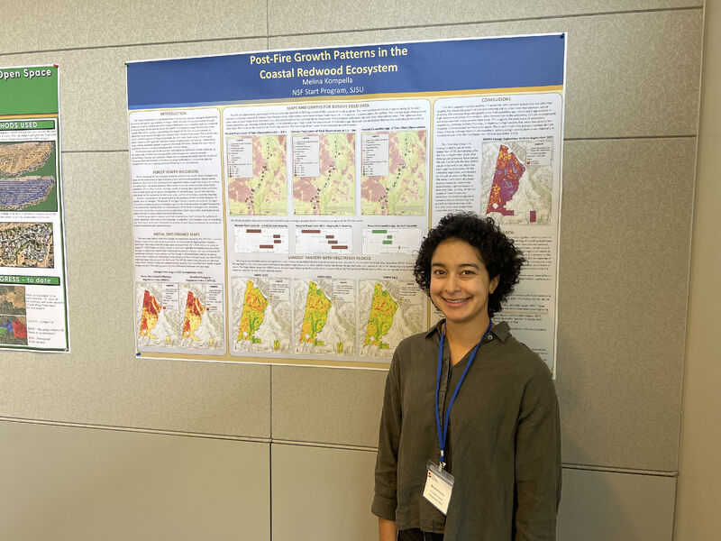
NSF Funds Innovations: Wildfire Research Projects Secure Industry Advisory Support
1 minute read
Exciting news! We are thrilled to announce that both of our Industry Advisory Board proposals to the Wildfire Interdisciplinary Research Center have successfully secured funding from the National Science Foundation (NSF) IUCRC. The projects, "Post-Wildfire Fuels Management using a Multi-source Remote Sensing Approach" and "Enhancing Community Fire Resilience Decision-Making: Drone…
January 19, 2024

Team FireWatch won 2nd Place in Silicon Valley Innovation Competition
1 minute read
The FireWatch Team from SJSU, blending expertise in Software and Aerospace Engineering, clinched 2nd place among 147 teams at the Silicon Valley Innovation Competition. Their innovative project combined GIS, engineering, computer vision, and drone tech for advanced California wildfire modeling, earning widespread praise. With support from SJSU's College of Engineering,…
November 29, 2023
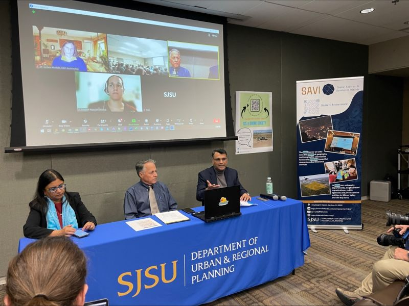
Celebrating Innovation and Collaboration at SJSU GIS Day
2 minutes read
2 minutes read
November 16, 2023
![[Post] Exploring Ecological Impact SJSU GIS & Drone Society's Collaborative Efforts](./posts/images/2023111001.jpg)
[Post] Exploring Ecological Impact SJSU GIS & Drone Society's Collaborative Efforts
1 minute read
The SJSU GIS & Drone Society successfully concluded a comprehensive data collection session at Wilder Ranch State Park. Led by Jannike Allen and David Benterou from the Fire Ecology & Management Lab, along with UC Santa Cruz collaborators, temperature data was gathered. Geography student Xiangyu REN contributed by capturing post-fire…
November 10, 2023
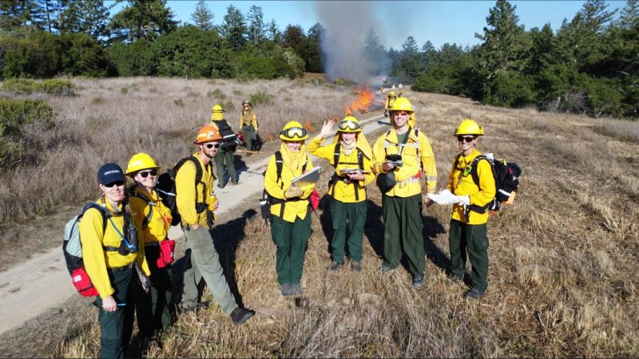
[Post] Collaborative Burn Day SJSU's GIS & Drone Society's Ecological Impact
1 minute read
The SJSU GIS & Drone Society had an impactful day at Wilder Ranch State Park collaborating with California State Parks' fire team. Professor Kate Wilkin's biology team gathered crucial fuel moisture and burn data, complemented by geography student Henri Brillon's post-burn aerial imagery for precise fuel volume estimates. This interdisciplinary…
November 09, 2023
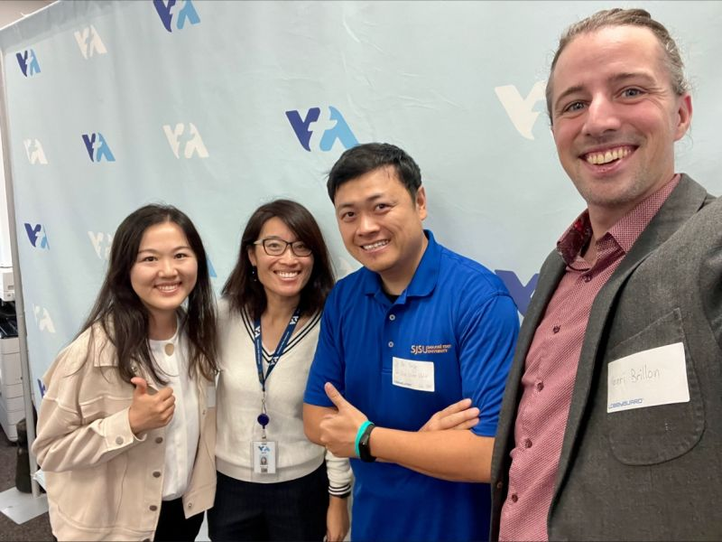
[Post] Highlighting SJSU GIS & Drone Society's Impact at VTA's GIS Day
1 minute read
SJSU GIS & Drone Society had an insightful experience at VTA's engaging GIS Day, where Xiangyu REN and Henri Brillon showcased their posters and interacted with VTA personnel. Professor Bo Yang highlighted the society's drone, LiDAR, and remote sensing projects. Gratitude was extended to Chao Liu and Taha Rao for…
November 06, 2023
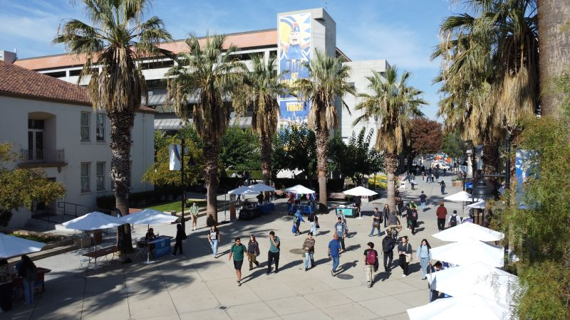
[Post] SJSU Graduate Fair Uniting Passion for GIS and Urban Planning
1 minute read
At the #SJSU Graduate Fair, the SJSU GIS & Drone Society connected with passionate GIS and Urban Planning enthusiasts, igniting inspiration. Engaging with many, we're excited to further conversations and shape the future collaboratively. Join us! #GIS #UrbanPlanning #Networking #GraduateFair #Drone4SJSU 🎓✨
November 03, 2023
Bo Yang's Drone Innovations Transforming GIS Research Across Environments
1 minute read
Bo Yang's pioneering use of drone technology revolutionizes GIS research. As an assistant professor at San José State University's Department of Urban and Regional Planning, he employs drones to explore coastal ecosystems and wildfires. Securing a National Science Foundation grant, Yang and co-investigators plan to engage students from various institutions…
October 01, 2023
![[Post] Dr. Karen Joyce Pioneering Circular Drone Data Economy Collaboration Vision](./posts/images/2023092201.jpg)
[Post] Dr. Karen Joyce Pioneering Circular Drone Data Economy Collaboration Vision
1 minute read
The SJSU GIS & Drone Society extends gratitude to Dr. Karen Joyce for her insightful presentation on the circular drone data economy! Her innovative GeoNadir platform, offering free geoprocessing tools and data hosting, reveals immense collaboration opportunities. The talk illuminated diverse drone data applications, fostering anticipation for future partnerships. 🚁🌐…
September 22, 2023
[Post] Advancing Drone Tech SJSU's Remote Sensing Presentation Success Recap
1 minute read
Professor Bo Yang showcased our ongoing drone and remote sensing projects in a comprehensive presentation to the Department of Meteorology and Climate Science at SJSU. View the full presentation below!
September 15, 2023
[Report] Advancing Wildfire Research: Prof Bo Yang Present Drone Innovations at SJSU MetCS Seminar
2 minutes read
2 minutes read
May 01, 2023
Advancing Wildfire Research: Prof Bo Yang Present Drone Innovations at SJSU MetCS Seminar
1 minute read
The San Jose State University (SJSU) Drone class, known as GEOG282/173, recently embarked on an enriching field trip to Moss Landing Marine Lab, offering students a hands-on experience in the dynamic environment of Elkhorn Slough. This outing was more than just a practical exercise; it was an immersive journey into…
April 19, 2023
![[Post] San Jose State's Urban Planning Research Excellence at AAG 2023](./posts/images/2023032401.jpg)
[Post] San Jose State's Urban Planning Research Excellence at AAG 2023
2 minutes read
2 minutes read
March 24, 2023
UAV Applications in Wildfire Research Mapping, Analysis, and Future Trends
2 minutes read
2 minutes read
March 15, 2023
[Paper] UAV Imaging Tracks Eelgrass Disease Across Pacific Coastal Ecosystems
2 minutes read
2 minutes read
February 28, 2023
[Paper] Quantifying Seagrass Decline UAV Imaging Unveils Climate Stress Impact
2 minutes read
2 minutes read
January 23, 2023
2022 SJSU GIS Day celebration featuring keynote speakers and a student poster competition
1 minute read
Video
November 16, 2022
[StoryMap] Breakthrough Research Understanding California's Canyon Wildfires Using Advanced Technology
2 minutes read
2 minutes read
October 25, 2022
The SJSU GIS and Drone Society has been invited to bring members to the Drone Racing League’s opening season at PayPal Park
1 minute read
Share:
October 11, 2022
SAVI Fall 2022 Hands-On Spatial Analytics Workshops for Professionals, Students
1 minute read
The Spatial Analytics and Visualization Institute (SAVI) announces its Fall 2022 workshop series, offering professionals and students innovative hands-on skill development in spatial analytics. In November, SAVI presents 3-hour lab sessions led by expert instructors from private industry and higher education. Individual workshop fees range from $275 (early bird) to…
October 05, 2022
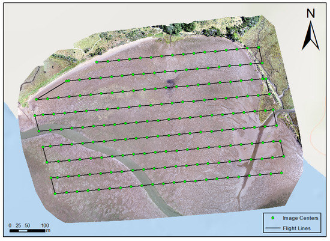
UAV Training Program for Seagrass Monitoring Top-Viewed Drone Research
1 minute read
Check out the top-viewed paper on @Drones_MDPI! It introduces a UAV/drone mapping training program for seagrass monitoring and research. Authored by @BoYangGeo, @timlhawthorne, @HessingLewis, and others. Dive into the full paper here: https://mdpi.com/2504-446X/4/4/70 #drones #UAV #Seagrass
September 28, 2022
San Jose State's Summer Drone Class Sparks Teen Engineering Enthusiasm
1 minute read
San Jose State University's Mineta Transportation Institute is fostering young minds through a summer drone-flying program for high school students, igniting their passion for science and engineering. Nearly three dozen local teens, including Presentation High School junior Sangyani Sinha, are part of the initiative, diving into drone piloting and hands-on…
July 19, 2022
![[SotryMap] West Coast Eelgrass Mapping UAS Fieldwork for Marine Ecology Assessment](./posts/images/2022071601.jpg)
[SotryMap] West Coast Eelgrass Mapping UAS Fieldwork for Marine Ecology Assessment
1 minute read
The San Jose State University (SJSU) Geography Program collaborated with various universities for a comprehensive drone mapping project along the West Coast. The initiative aimed to assess eelgrass meadow health and extent, employing UAS technology and fieldwork to gather high-resolution imagery. Students utilized DJI Phantom 4 Pro and Inspire drones…
July 16, 2022
[Paper] Ocean Warming Fuels Eelgrass Disease AI-Enabled Climate Surveillance Insights
1 minute read
A study links ocean warming to eelgrass wasting disease across latitudes, spotlighting the risks posed by rising temperatures to coastal ecosystems. By combining satellite temperature data with field surveys spanning 3500 km along North America's Pacific coast, the research found disease prevalence linked to warm anomalies, indicating heightened risks due…
June 03, 2022
[Paper] Traffic Restrictions During 2008 Beijing Olympics Mitigated Urban Heat
1 minute read
The study investigates the influence of traffic restrictions implemented during the 2008 Beijing Olympic Games on urban heat dynamics using satellite thermal remote sensing. By analyzing daily MODIS satellite data on surface temperature and developing statistical models, the research reveals substantial reductions in mean surface temperature by 1.5-2.4 °C and…
May 02, 2022
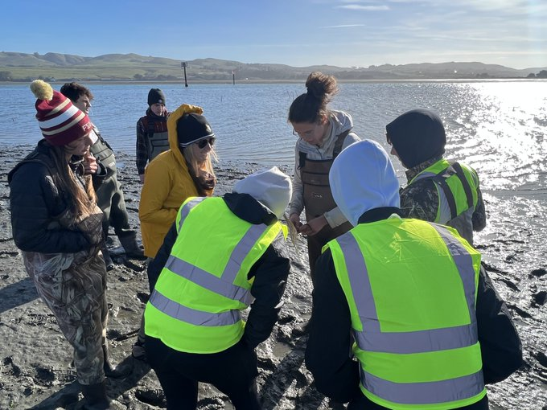
[Post] UCF @Citizen_GIS Collaborates with SJSU @sjsu_urbp for Fieldwork
1 minute read
UCF's @Citizen_GIS joined Bodega Bay fieldwork with K12 support. SJSU's @sjsu_urbp presented inspiring talks and lightning sessions, watch on: https://facebook.com/sjsuurbanplanning/videos/544403550277383
March 28, 2022
[StoryMap] The UCF Citizen Science GIS team is visiting SJSU and bringing K-12 students from Florida to conduct drone mapping fieldwork in Bodega Bay, CA
1 minute read
Coast to Coast with Astronaut High Explorers
March 15, 2022
[Paper] Mapping Emotional Attachment in Coastal Restoration Community Perspectives Guide Priorities
1 minute read
The study explores emotional attachment within the Indian River Lagoon, Florida, to inform coastal restoration priorities. Through Geographic Information Systems, aggregate emotional attachment data from stakeholders is mapped. Kernel density estimation (KDE) measures are employed at a broader lagoon scale, while inverse distance weighted (IDW) measures are used at more…
November 30, 2021
[Paper] Remote Sensing Unveils Microbiome Dynamics: Scaling Ecosystem Interactions Profoundly
1 minute read
The article "The Future Is Big-and Small: Remote Sensing Enables Cross-Scale Comparisons of Microbiome Dynamics and Ecological Consequences" explores the integration of remote sensing and microbial omics-based techniques. This interdisciplinary approach offers insights into microbial interactions across different environments. By combining data-rich methods such as remote sensing, machine learning, spatial…
November 03, 2021
SJSU SAVI GIS Talk: urban and environmental research with using GIS, drones, and data science
1 minute read
Video
September 24, 2021
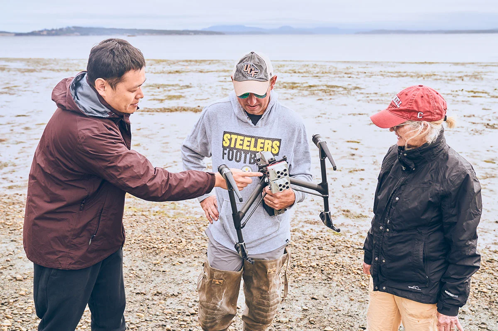
UCF Researchers Dive into Real-World GIS Work in Summer Projects
1 minute read
The article highlights the immersive GIS fieldwork undertaken by University of Central Florida (UCF) researchers during the summer. Led by Dr. Timothy L. Hawthorne, the team engaged in a variety of projects centered on Geographic Information Systems (GIS). Their activities ranged from surveying land use changes in Delray Beach to…
August 18, 2021

Team Completes First Set Of Data Collection For NSF Smithsonian Eelgrass Research
3 minutes read
3 minutes read
July 04, 2021
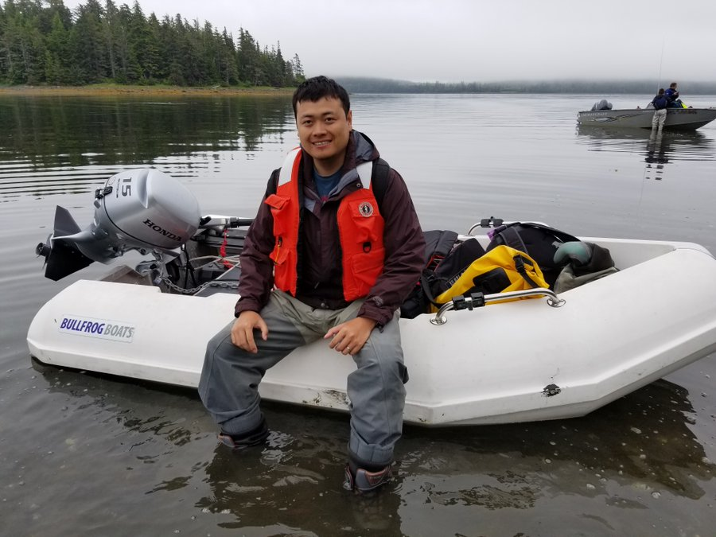
[Post] Dr. Yang joined Department of Urban & Regional Planning at San Jose State University
1 minute read
@SJSU_URBP & @SJSUCOSS welcome @BoYangGeo, our new Assistant Prof joining in F'21. With a PhD in Geography from @UC_ArtSci, Dr. Bo Yang specializes in #GIScience, #RemoteSensing, #UAVs, and #CitizenScience. Excited to have their expertise in our team!
June 03, 2021
The drone education featured at 2021 ESRI Imagery and Remote Sensing Educators Summit
1 minute read
See original post
March 26, 2021
Advancing GIS Education: Insights from the 'Teaching with Drones' Webinar
2 minutes read
2 minutes read
March 18, 2021
Drones Empowering Communities: Participatory Sciences in Global Perspective
2 minutes read
2 minutes read
February 28, 2021
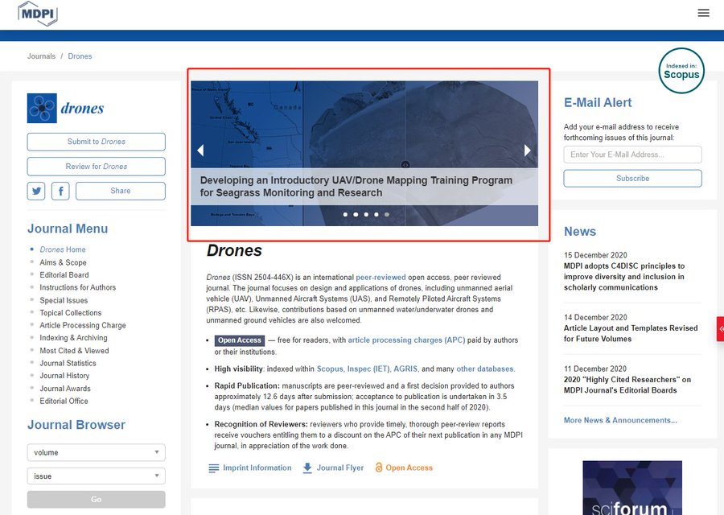
[Post] Paper on developing a UAV mapping and training program highlighted as the cover story in journal Drones
1 minute read
Our @citizen_gis recent paper on developing a UAV mapping and training program has been highlighted as the cover story in journal @Drones_MDPI. This is one of the first efforts in using UAV for seagrass research on the Pacific coast @timlhawthorne Paper: https://doi.org/10.3390/drones4040070
January 25, 2021
[Paper] ST-Cokriging: Assimilating Multi-Scale Remote Sensing for Enhanced Resolution
2 minutes read
2 minutes read
December 24, 2020
[Paper] New paper published about drone training program for seagrass along the west coast
1 minute read
See original post
November 03, 2020
Exploring Seagrass Wasting Disease: Eelgrass Threats and Research Insights
2 minutes read
2 minutes read
October 19, 2020

Summer NSF Pacific Coast Drone Mapping Completed Safely During COVID-19
4 minutes read
4 minutes read
September 16, 2020

NSF Drone Mapping Finds A Change Of Eelgrass Bed In Spatial Extent And Patchiness
3 minutes read
3 minutes read
July 20, 2020

Citizen Science GIS Uses Remote Drone Mapping In Response To COVID-19
2 minutes read
2 minutes read
July 07, 2020

New Teacher Funding For Drones, GIS And Fieldwork From Our NSF Grant
3 minutes read
3 minutes read
April 22, 2020
[Paper] Spatio-Temporal Fusion Enhances Crime Prediction Using Multi-Source Data
2 minutes read
2 minutes read
March 13, 2020

Our Maps, Apps & Drones Tour And GeoBus Celebrate GIS Day At UCF
3 minutes read
3 minutes read
November 18, 2019
Capturing the Beauty of Belize from Above with Smithsonian MarineGEO
1 minute read
See original post
November 08, 2019

Kirsten Bouck And Morgan McDonald Win Student Presentation Competition
1 minute read
Original post
September 12, 2019
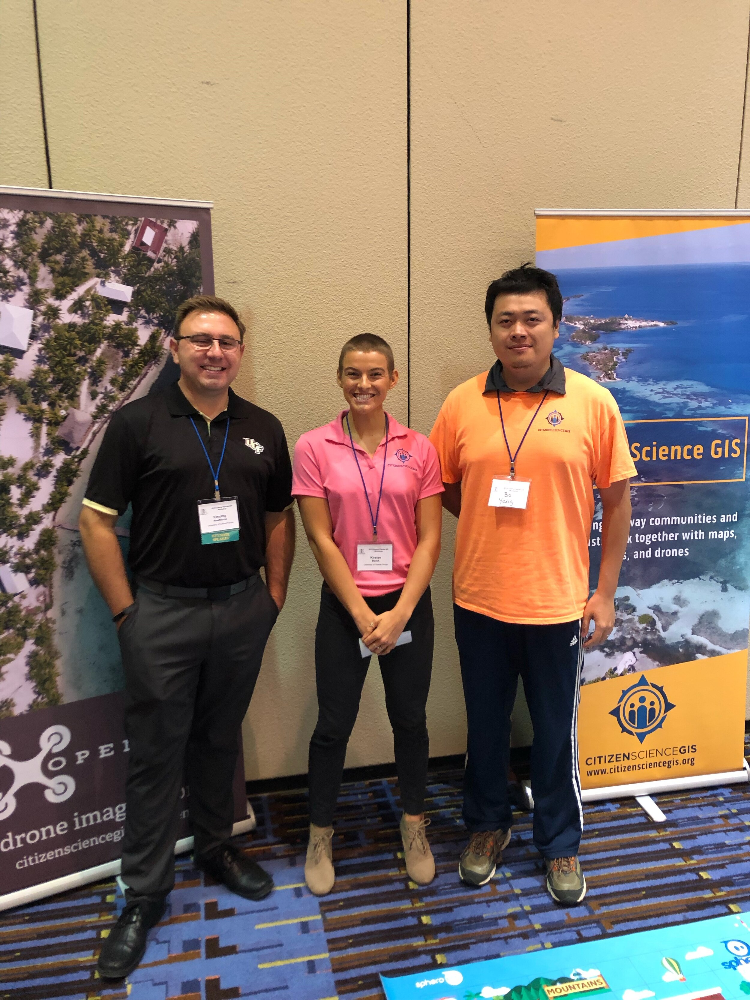
The Golden Rule, DroneCat And GeoBus At Central Florida GIS Workshop
1 minute read
Original post
September 12, 2019

Citizen Science GIS Completes Drone Work In Alaska The Last Frontier
4 minutes read
4 minutes read
August 07, 2019
[Paper] Enhancing Coastal Management UAV vs Satellite for Detailed Mapping
2 minutes read
2 minutes read
July 27, 2019

UCF Drone Team Finishes The Mapping In Southern California With SDSU And Smithsonian
3 minutes read
3 minutes read
July 25, 2019

UCF Drone Team Finishes Eelgrass Research Alongside UC Davis
4 minutes read
4 minutes read
July 16, 2019

UCF Drone Team Finishes Eelgrass Mapping With Team From Oregon State And Cornell
2 minutes read
2 minutes read
July 01, 2019
UCF Drone Team Finishes Eelgrass Mapping With Team From UW And Cornell
3 minutes read
3 minutes read
June 12, 2019
![[Paper] Geostatistical Approach for Enhanced Land Use Mapping and Prediction](./posts/images/Picture78.jpg)
[Paper] Geostatistical Approach for Enhanced Land Use Mapping and Prediction
2 minutes read
2 minutes read
June 01, 2019

Researchers At Univ. Of Central Florida Are Going To Use Geo-Statistical Approach To Blend UAV Imagery With Satellite Data For Monitoring Seagrass Along West Coast.
2 minutes read
2 minutes read
April 09, 2019
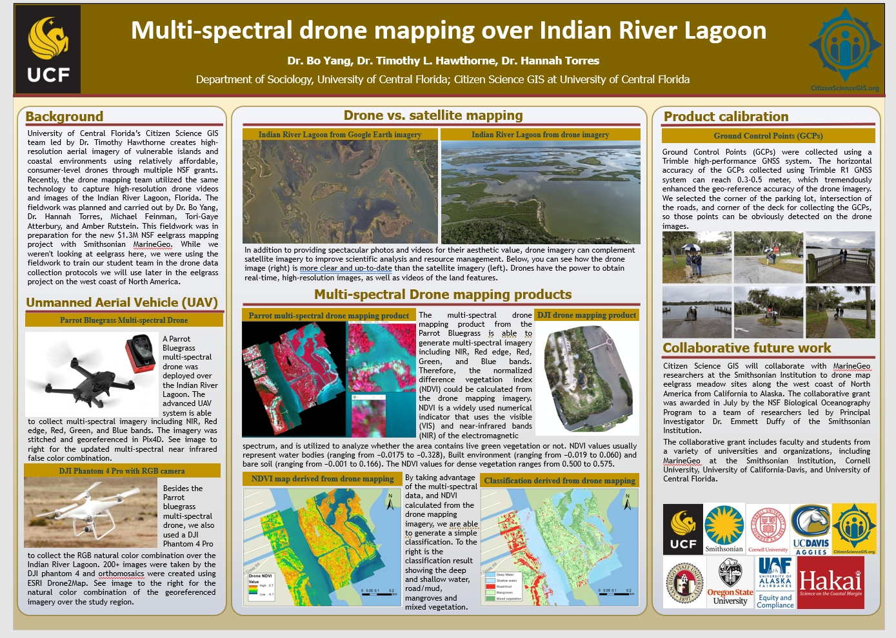
Dr. Yang Presents Multi-Spectral UAV Mapping At UCF Research Week Event
1 minute read
Original post
April 05, 2019


2019-03-29-How To Create Region Of Interest (ROI) In Google Earth Desktop Using KML File
1 minute read
Google Earth on desktop is free for users with advanced feature needs. It's a really useful resource allowing users to import and export Geographic Information System (GIS) data, and go back in time with historical imagery. Available for free for download on PC, Mac, or Linux. We've created this quick…
March 29, 2019
2019-03-29-How To Create Region Of Interest ROI In Google Earth Desktop Using KML File
1 minute read
Original post
March 29, 2019

Multi-Spectral Drone Mapping Fieldwork In Indian River Lagoon
3 minutes read
3 minutes read
March 11, 2019

UCF GIS Academy Empowers Educators for Spatial Teaching Integration Success
2 minutes read
2 minutes read
February 05, 2019

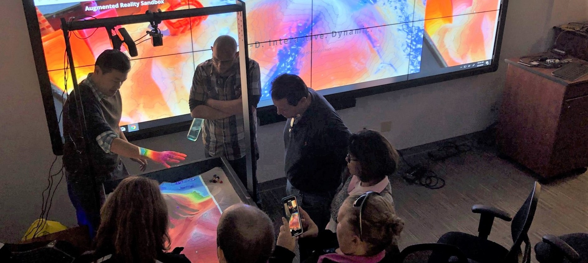